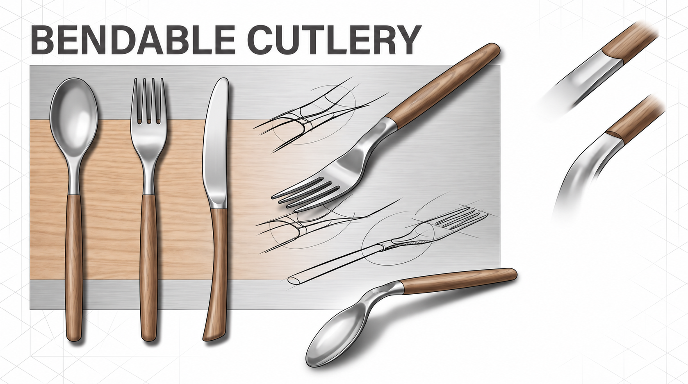

2025 · Experience, Motivation & Behavior
Bendable
Cutlery.
A flexible cutlery concept that encourages mindful portions through a controlled flex hinge.
Designed to
give feedback.
The cutlery remains stable during normal use, then gently flexes with excessive force to make over-serving more noticeable.
The concept explores how a familiar eating object can invite more mindful behaviour without adding friction to everyday meals.